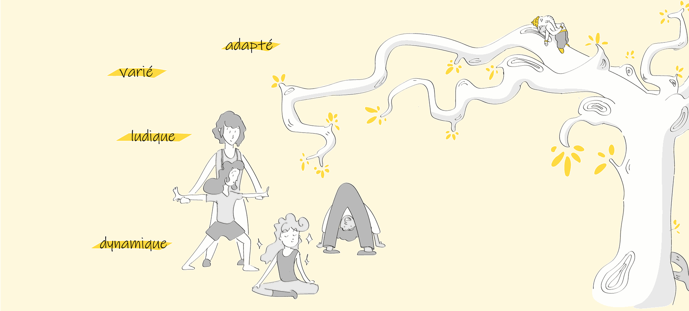

Cours enfants
L'enfant est un être en construction. Lui permettre de découvrir, à travers la pratique d'un yoga adapté, la richesse et les potentiels qu'il porte en lui est un cadeau magnifique que les adultes, parents, enseignants, éducateurs peuvent lui offrir.

Quel yoga pour les enfants et les adolescents ?
La pratique du yoga chez les enfants et adolescents favorise le développement de la perception de leur schéma corporel, de leurs capacités motrices, de la concentration, de la confiance en soi. C'est également un moyen d'apprendre à être à l'écoute de soi, en lien avec les autres.
Il est possible de prévoir un cycle de séances autour d'une thématique : émotions, stress, préparation à l'examen, vivre ensemble…
Où et quand ?
-
Intervention en milieu scolaire ou de loisirs
-
Intervention en structure thérapeutique
-
À la demande pour un groupe d'enfants constitué d'au moins quatre personnes
-
Tarifs à définir suivant les modalités et lieux d'intervention.
Renseignements au 06 71 41 57 45